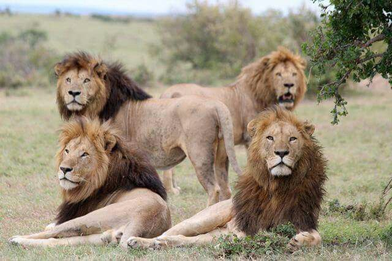

Dumelang, Lefatsheng!
Welcome to the exciting world of web development.Now you know my name and I am a 19 year old young man from Tsamaya village in Botswana who is very passionate about computer technology .I am doing year 1 semester 2 computer systems engineering and so far my journey has been smooth though I perfomed very from how I wanted to perform .All I want from this course is to acquire the necessary skills and ablities I need to make my goals come true .which i must work hard to acquire and by the grace of God I will acquire.
Bac is the right college for me as I have proclaimed to myself and it's really convenient to study while staying within the college campus .Right now I am an add member in the IEC community responsible for helping the conduction of elections .I also help others when they ask me for assistanc with college work and recently I have started working out and exercising in the morning and at times in the afternoon.Most students have side hustles lie betway to earn extra money while have set up a tuition service to help students with systems devrelopment .
When it comes to hobbies I have quite a few which include playing table tennis ,watching youtube reels which is a bad habit I must strive to seclude myself from it as soon as now.Writing or trying to write code on by myself during self study is also a habit of mine to try and make coding easier for myself.I also love to farm or grow crops with my parents.